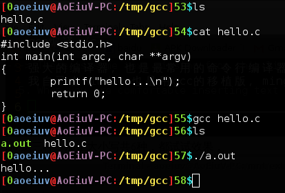
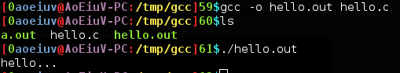
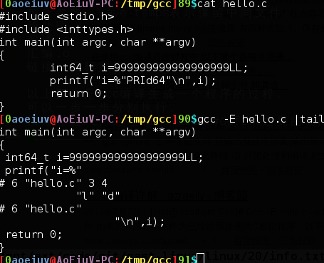
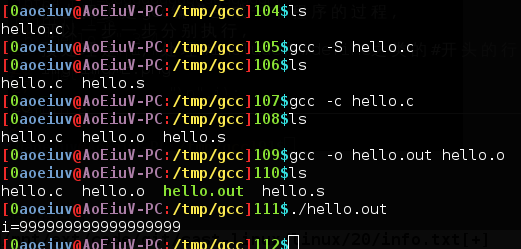
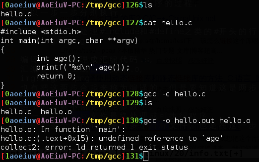
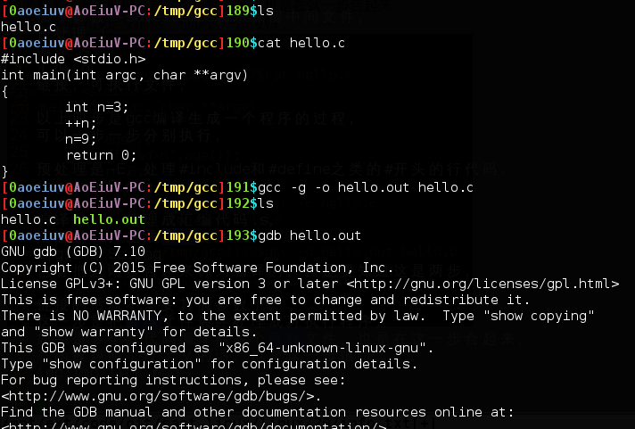
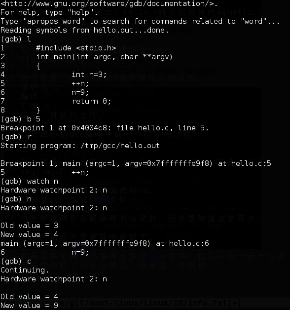
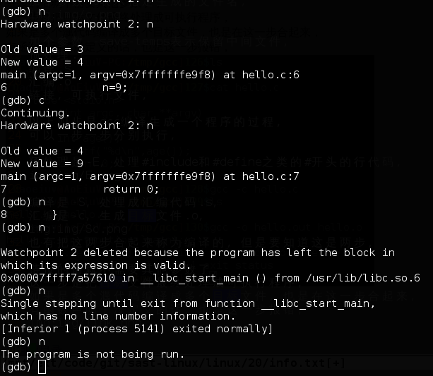

gcc编译c/c++，强大的编译器，也是最常用的命令行编译器，我自己在Windows也是用gcc的移植版，mingw，到这一课，应该已经有办法在Linux上写点代码了吧，实在不行还可以在windows环境下写完了再上传到Linux，首先声明这里不是讲c语言，而是讲编译工具，来个hello.c，直接gcc hello.c就可以编译代码hello.c，默认生成文件名为a.out。

加个参数-o表示指定生成的文件名。

加个参数--save-temps表示保留中间文件，预处理.i，编译.s，汇编.o，链接，可执行文件，以上四步是gcc编译生成一个程序的过程，可以一步一步分别执行，预处理是-E，处理#include和#define之类的#开头的行代码。

编译是-S，处理成汇编代码.s，汇编是-c，生成目标文件.o。

也有把这两步合起来称为编译的，但是要知道这是两步。
链接的话就不需要其他参数了，这一步是把目标文件最终处理成可执行程序，如果是多个濿代码编译成多个目标文件，也是在这一步合起来，有函数声明了没定义的话，也是这一步报错。



